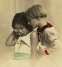

De: La Frikipedia, la enciclopedia extremadamente seria.
De: La Frikipedia, la enciclopedia extremadamente seria. De: La Frikipedia, la enciclopedia extremadamente seria.

|
Este artículo necesita ser ilustrado. Busca una afoto en nuestro depósito de imágenes o donde sea y ponla, pero que no sea pr0n, que se cabrea el señor del adSense y nos corta el grifo de los dólare. Y sin dólare no hay servidor... |
|  | ATENCIÓN Este artículo está huérfano, quiere decir, ningún otro artículo enlaza a este artículo. Busca algún artículo que pueda enlazar aquí ya sea por mención o por relación temática y apadrínalo por lo que más quieras. |

|
FRIKIPEDIA QUIERE QUE ESTA DEFINICIÓN
PASE A SER UN ARTÍCULO FRIKIPÉDICO La información contenida en este artículo es una mínima parte de su jugo total, así que ponte los guantes, saca el tupperwere y empieza a exprimir el tema. Si lo haces serás recompensado con una galleta en almíbar y algo más. |
Ser frecuentemente necesitado de amor de Madre que intenta desesperadamente conseguir llevar a cabo el cortejo con un individuo del sexo opuesto, en sesemejante acto de los carneros en los documentales de Félix Rodríguez de la fuente.
El cánon básico y mas comun de este especimen se ve reflejado en un adolescente fracasado, habitualmente aficionado a cultivar mierda, hacer el bago y en los mejores casos, jugar al Rol. Tiene tendencias antisociales.
La imagen es la de un chico fisicamente no agraciado (sinónimo de feo) que comunmente está gordo y hace peste. Se divierte mostrando sus encantos a la fauna femenina de alrededor.
El especimen se ancuentra normalmente rechazado por las hembras, pero emplea en ello todas sus energias y continua insistiendo, con lo cual consigue por parte de la hembra un "vete a la mierda". El susodicho tiracañas, muestra su agrado hacia el sadomasoquismo insistiendo de nuevo. La hembra entonces empieza a ponerse verde por momentos y a desenvolupar unos fuertes y musculados pectorales, patentados por "La Mia", que le permiten apalizar al tiracañas. El adolescente sale lisiado del acto, y al ver que no ha conseguido satisfacer sus deseod de cópula, o lo que es lo mismo, no se ha comido un rosco, se mata a pajas en un W.C. Público.
Un tiracañas en la piscina es un terror. El susodicho se presenta en bañador, lo cual hiere la vista de cualquiera. El adolescente, que se cree que está de buen ver, se "pasa de listo" la cual cos apuede ocasionarle problemas si se encuentra el hermano mayor de la rubia o con el socorrista homosexual. En este caso, huye como un perro, para el triunfo de la sociedad femenina. También es un peligro encontrárselo en el médio acuático, pues éstos intentan Acercarse/violar/desnudar a la poblacion creyendose que esto les hará felices. No lo consiguen.
Aún que las hay en todas partes y de lodas las edades, la imagen mas habitual es también la de una adolescente, supuestamente rubia y para desengaño de los que han avistado por debajo de su minifalda, no lo és. Las mujeres tiracañas acostumbran a llevar faldas cortas que permiten tenerlo bien aireado todo. Otro desengaño que se lleva la fauna masculina es cuando se pone el bikini. Sus voluminosos y bien puestos senos se convierten en dos tumores apenas apreciables. Eso significa que dentro de su sujetatetas llevan un chorizo de cantimpalo para hacer bulto. Otra de as cosas que ellas hacen es comprarse sujetatetas tres tallas pequeños, porque asi el chorizo de cantimpalo (o relleno) las aplasta.
Autor(es):